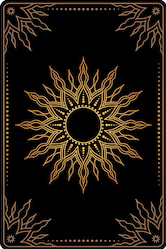

Tipos de Solo
Terreno Árido: Dificuldade e improdutividade. Terreno Batido: Jornada árdua e pragmatismo Terreno Enlameado: A instabilidade emocional, a dificuldade de caminhar e o peso do subconsciente. Campo Arado: O trabalho duro, a base para o crescimento. Ter o que é necessário para produzir resultados sólidos. Campo de Trigo: Colheita, fertilidade e nutrição. Abundância material e o resultado concreto do que foi plantado. Grama Verde: Potencial de crescimento, terreno fértil.